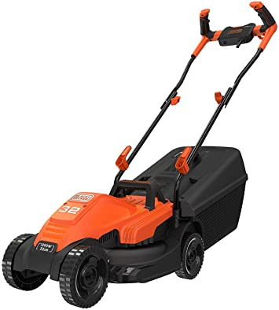

BLACK+DECKER BEMW451BH-QS
El BLACK+DECKER BEMW451BH-QS és un tallagespa elèctric potent i eficient, ideal per a l'ús domèstic en jardins de grandària petita i mitjana. Amb el seu motor de 1200 W i una amplada de tall de 32 cm, aquest tallagespa ofereix un rendiment excepcional en qualsevol tipus de gespa. A més, compta amb un sistema d'ajust d'alçada de tall en 3 posicions, que permet adaptar el tall a les teves necessitats específiques.
El disseny compacte i lleuger del BLACK+DECKER BEMW451BH-QS el converteix en una opció ideal per a usuaris que busquen un tallagespa fàcil de transportar i emmagatzemar. El sistema de pinta per a gespa assegura un tall net i uniforme, fins i tot prop dels marges.
No esperis més i adquireix el teu BLACK+DECKER BEMW451BH-QS per gaudir d'un jardí perfecte en tot moment.
Compra ara